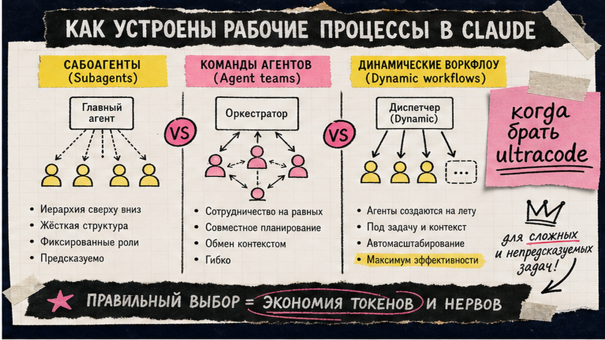
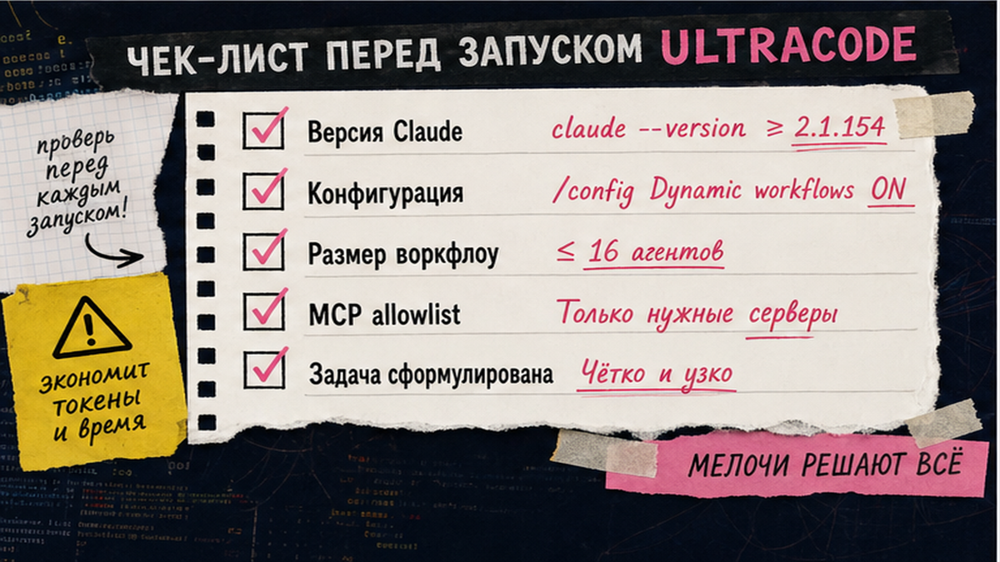
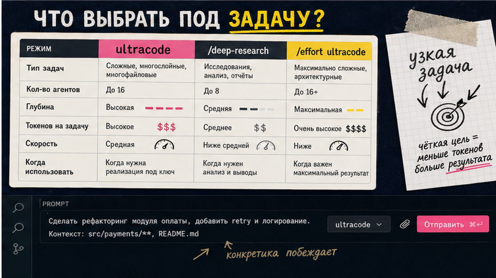

Dynamic workflows в Claude Code нужны, когда одной сессии в чате мало: аудит всего репозитория, миграция или параллельный web-research. Без ultracode и панели /workflows вы не увидите план, не остановите перерасход токенов и не сохраните скрипт на повтор. Ниже – полный цикл за 20–40 минут: версия 2.1.154+, /config, первый run, мониторинг и save. После прочтения вы запустите workflow сами и вернёте /effort high для рутины.
TL;DR / Быстрый инсайт: Dynamic workflow – JavaScript-скрипт, который Claude пишет под задачу; runtime запускает десятки субагентов в фоне, а промежуточные данные хранятся в переменных скрипта, а не в окне чата. Минимум Claude Code v2.1.154. Старт: ultracode: в промпте, /deep-research или /effort ultracode. Контроль – /workflows (p pause, x stop, s save). Лимит: до 16 агентов одновременно, до 1000 за один run. Токенов уходит заметно больше, чем в обычном чате – начинайте с узкой задачи.
Dynamic workflow – не "удобные привычки" вроде CLAUDE.md или hooks. Это отдельная фича Anthropic (GA с 28 мая 2026, релиз v2.1.154): Claude генерирует исполняемый JS-план, runtime оркестрирует субагентов без вашего участия в каждом turn. Для автоматизатора это ближе к Make-сценарию внутри IDE, чем к одному длинному prompt. MCP (Model Context Protocol) – "розетки" для внешних tools; их настраивают до длинного run через подключение MCP в Cursor или allowlist в Claude Code.

Три способа "размножить" Claude путают в поиске по claude code workflow. Различие – кто держит план и где лежат промежуточные результаты.
| Критерий | Subagents / Skills | Agent teams | Dynamic workflows |
|---|---|---|---|
| Кто оркестрирует | Claude по turn в чате | Lead-агент + peers | JS-скрипт + runtime |
| Где данные между шагами | Context window чата | Общий task list | Переменные скрипта |
| Масштаб | Несколько задач за turn | Handful peers | Десятки–сотни агентов (до 16 параллельно) |
| Прерывание | Restart turn | Teammates продолжают | Resume в той же сессии |
| Когда брать | Точечная делегация | Долгие peer-сессии | Аудит, migration, research на весь repo |
Итоговый вердикт: Для "проверь один файл" хватит subagents. Для "пройди 200 модулей и сведи отчёт" – dynamic workflow с ultracode. Делайте: ultracode на scoped-задачу. Не делайте: включать /effort ultracode на весь рабочий день – расход токенов вырастет кратно.

Фича требует Claude Code v2.1.154 или новее. На Pro dynamic workflows включают вручную; на Max, Team, Enterprise и при работе через API – обычно уже включено (Enterprise-админ может выключить).
Делайте: на Pro явно проверьте toggle после обновления CLI. Не делайте: путать dynamic workflows с обычными "workflow-практиками" (CLAUDE.md, /plan) – это разные слои.

Триггер: ключевое слово ultracode: в промпте или фраза "use a workflow". Команда /effort ultracode включает xhigh reasoning и авто-планирование на текущую сессию – только для моделей с xhigh effort.
Схема первого прогона:
claude --version → /config ON → узкий промпт (ultracode: или /deep-research) → approve plan → /workflows → save (s) → /effort high
Безопасный первый run – не весь monorepo, а одна папка или один research-вопрос:
Пример /deep-research:
/deep-research Какие breaking changes в React 19 для migrate с 18?
Или для кода:
Пример ultracode:
ultracode: audit src/components/Button – dead code, тесты, типы TypeScript
Claude покажет план и запросит подтверждение. Ctrl+G – просмотр JS-скрипта; Alt+W / Option+W – отменить ultracode для одного промпта.
Делайте: /deep-research для первого знакомства. Не делайте: оставлять ultracode на сессию – верните /effort high после задачи.
Команда /workflows открывает панель run: фазы, агенты, token totals.
Resume после pause – пока CLI открыт. Субагенты в acceptEdits: правки файлов auto-approved.
Делайте: save удачный скрипт – diff и relaunch из сохранённого workflow. Не делайте: обещать себе "1000 параллельных агентов" – одновременно max 16, 1000 – total за один run.
Типовые задачи, где claude code ultracode окупается:
Кейс Bun (750k строк Rust) – иллюстрация масштаба, не SLA. Связка: Claude Code на код + Make на CRM. На курсе по Make.com разбираем границу IDE и фоновой автоматизации.
Делайте: формулируйте границы в промпте ("только src/auth", "без изменения package.json"). Не делайте: запускать migration workflow на prod-ветке без бэкапа и отдельной git-ветки.
Dynamic workflows потребляют существенно больше токенов, чем обычная сессия – рекомендация Anthropic начать со scoped task.
Делайте: смотреть token totals в /workflows как на счётчик расхода. Не делайте: auto-approve опасных tools без тестового run на копии проекта.
Вопросы по связке Claude Code + автоматизация – в Telegram @maya_pro.
Материал проверен: эксперт Артур Хорошев (CEO Maya AI, практик Make.com, Cursor и MCP).
Достоверность данных: версии Claude Code (v2.1.154+, v2.1.202+), лимиты агентов (16 concurrent / 1000 total), команды /workflows и ultracode сверены с официальной документацией code.claude.com/docs и релизом v2.1.154 от 28.05.2026. Показы Wordstat по claude code workflow в Cloud run недоступны – LSI из SERP и docs.
Два входа: ключевое слово ultracode: в одном промпте или команда /effort ultracode на сессию. Это xhigh reasoning плюс автоматическое планирование dynamic workflow для substantive tasks. После задачи верните /effort high – ultracode не для рутины на весь день.
Workflow – исполняемый JS-скрипт и runtime с переменными между шагами; teams – lead и peers в одном чате с общим task list. Workflow масштабируется на десятки агентов; teams – на handful peers. Выбирайте workflow для audit/migration всего repo.
Откройте /workflows, выберите завершённый run и нажмите s (save). Файл попадёт в .claude/workflows/ проекта или ~/.claude/workflows/ для личных сценариев. Скрипт можно diff и relaunch без переписывания промпта.
Значительно больше обычной сессии – смотрите token totals в /workflows. Начните с узкой задачи или /deep-research. На v2.1.202+ поставьте Dynamic workflow size = small в /config. При росте расхода – p (pause) или x (stop).
v2.1.154 или новее. Проверка: claude --version в терминале. Релиз dynamic workflows – 28 мая 2026; фича GA на Pro, Max, Team, Enterprise и через API/Bedrock/Vertex.
Да: /config → Dynamic workflows → ON. На Max, Team, Enterprise и при API – обычно включено по умолчанию. Enterprise-админ может отключить для организации.
Да, в той же сессии Claude Code: /workflows → выберите run → p уже нажат для pause → resume из панели. Закрыли CLI – следующий запуск начинается с нуля, save помогает не потерять скрипт.